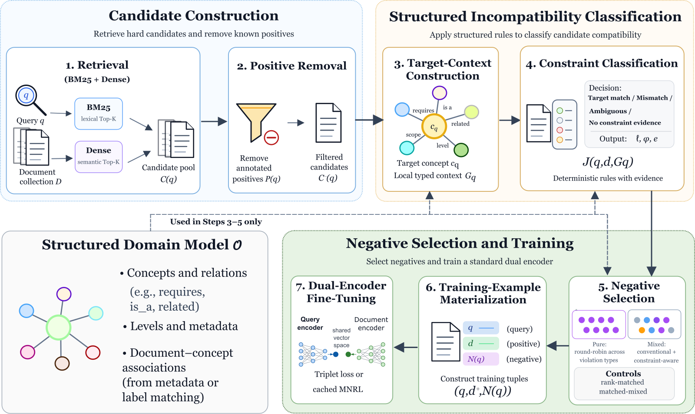
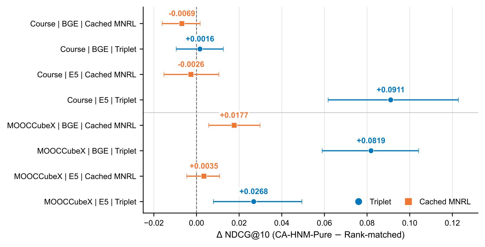

SHARE
When training a dense retriever, hard negatives are usually taken from documents that BM25 or vector search ranks highly but that are not labeled positive. Ranking high, however, only says a document resembles the query; it does not say why the document should not be retrieved. A resource on advanced SQL query optimization is close to the query "beginner SQL join" both lexically and semantically; what is wrong with it is that both the concept and the difficulty level differ. CA-HNM uses the prerequisite, broader/narrower, related-concept and level information in a course knowledge graph to check, for each hard candidate, exactly where it conflicts with the query's target, and keeps only candidates with an explicit conflict as negatives. Against a control that takes negatives from the same retrieval positions without consulting the graph, it has higher NDCG@10 in 6 of 8 settings; yet on Course-Skill Atlas, randomly shuffling the graph's relations raises NDCG@10 from 0.0311 to 0.1174.
Retrieval teams that already have a category tree, knowledge graph or skill taxonomy should read this paper, because its control is clean: it separates how high a negative ranks from whether the negative violates the domain structure, and many hard-negative papers never control the first variable. The core idea in one sentence: retrieval finds the hard candidates, deterministic rules over the graph decide whether each one is really wrong, and the graph is used only when building training data offline, so the online model is still an ordinary dual encoder. I think the evidence is weaker than the title suggests, though: the gains show up mainly under triplet loss, in a mixed negative pool they add only 0.0038 to 0.0076 NDCG@10, and the shuffled-graph control beats the real graph.
What problem is it actually solving?
Take a course-search example (illustrative). The query is "beginner SQL join", and the only labeled positive is "SQL join: an introductory handout". The top results from BM25 and vector search also contain the unlabeled documents below, and conventional hard-negative mining treats them all alike as negatives.
| Candidate (illustrative) | Retrieval rank (illustrative) | Relation to the target concept | CA-HNM's decision |
|---|---|---|---|
| "Advanced SQL query optimization" | 2 | Same topic, but advanced level | Level mismatch, kept as negative |
| "Basics of relational algebra" | 3 | A prerequisite of SQL join | Relational mismatch, kept as negative |
| "Exercises on join and subqueries" | 4 | Mentions join and other concepts | Conflicting evidence, dropped |
| "Database course overview" | 5 | A broader concept than the target | Scope mismatch, kept as negative |
| "Merging tables in Excel" | 6 | No relation found in the graph | No evidence, dropped |
The table shows two risks. The first is missing labels: the exercises document may well be useful to a beginner and simply unlabeled, and treating it as a negative teaches the model to push away a relevant document. The second is uninformative negatives: the Excel document ranks fairly high, but the model learns nothing from it about the distinctions that matter in this domain. CA-HNM keeps only candidates for which it can say what is wrong, and records the type of conflict.
The pipeline: retrieval finds hard candidates, the graph judges them

| Stage | Input | What it does | Output |
|---|---|---|---|
| Gather candidates | Query | BM25 and dense retrieval each take the top 100, merged, with labeled positives removed | Pool of hard candidates |
| Find the target concept | Query, graph | Use the concept id if present, otherwise match names and aliases | Target concept and its neighbors |
| Classify conflicts | Each candidate | Fixed rules check which neighbors it mentions and whether it has target evidence | Conflict type and the triggering evidence |
| Select negatives | Conflicting candidates | Take them in turn by conflict type, at most 4 per query | Training triples |
| Train | Triples | Fine-tune a BGE or E5 dual encoder | An ordinary dense retriever |
The key division of labor: retrieval rank decides whether a candidate is hard enough, the graph rules decide whether it is a true negative. The last two steps are unpacked below.
Why classify conflicts with rules?
Start with what is in the graph. In MOOCCubeX, concepts are linked by prerequisite relations; in Course-Skill Atlas, skills are linked by broader/narrower and related relations. For each query, the method first finds its target concept and then collects the concept's direct neighbors into a small local graph.
A set of deterministic rules then classifies every candidate. If the candidate mentions the target concept's name and shows no conflict, it is a target match, possibly a missing positive, and cannot be a negative. If it mentions a sibling, prerequisite or follow-on concept without enough target evidence, it is a relational mismatch. If it mentions a broader or narrower concept, it is a scope mismatch. A level mismatch uses the difficulty level the graph assigns to concepts: if the candidate's concept has a different level from the target, it counts as a mismatch. If target evidence and conflict evidence appear together, it is ambiguous and also dropped. Written as a formula, the retained negative set is:
Here is the set of labeled positives, means the candidate is in the top K of BM25 or dense retrieval, and means it triggered at least one conflict rule. Intuitively, it adds a "we can say what is wrong with it" condition on top of the usual hard-negative condition.
Why rules rather than another trained classifier? With rules, every negative carries its evidence, for example "mentions the prerequisite concept relational algebra and never mentions join", so the share of each conflict type in the mined pool can be inspected directly. The cost is that rules only recognize literal name and alias matches; a different wording slips through.
Negative selection also takes conflict types in turn. Suppose a query has 6 relational-mismatch candidates, 1 level mismatch and 1 scope mismatch (illustrative). Taking the top 4 by retrieval rank might give four relational mismatches. Taking them in turn first picks the highest-ranked candidate of each type and then goes back to relational mismatches for the fourth, so a single type cannot fill all the negative slots.
How do they show it is the graph, not the retrieval position, that matters?
This is, I think, the best-designed part of the paper. Negatives picked by the graph may have a different rank distribution from DenseNeg (simply taking the highest-ranked non-positives from dense retrieval), so comparing only with DenseNeg cannot tell whether a gain comes from difficulty or from the graph. The authors therefore build a position-matched control. For each negative CA-HNM picks, the control finds, in the same candidate pool, the non-positive whose retrieval rank is closest to it, without looking at the graph, so the two sets of negatives have roughly the same retrieval ranks. Ties follow the original retrieval order. The two sets of negatives are about equally hard and differ only in whether the graph filtered them.
Experiments use two education datasets, with concepts or skills as queries and learning resources or curriculum records as documents. MOOCCubeX has 3,781 documents and 3,500 training queries; Course-Skill Atlas has 281,153 documents but only 227 training queries and 32 development queries. The encoders are BGE and E5, and the losses are triplet loss and cached MNRL (a multiple-negatives ranking loss over the batch, with caching to support large batches). Triplet loss compares one positive with one selected negative at a time; cached MNRL also treats the documents of other queries in the batch as negatives, so the 4 selected negatives are only a few of many competitors. Each configuration runs 10 random seeds, and 95% confidence intervals come from resampling both seeds and queries.
Results: clearer under triplet loss
The first question is whether graph filtering beats the position-matched control. The table below lists development NDCG@10; the last column is the best of the four negative strategies in each configuration.
| Dataset | Encoder | Loss | Position-matched control | CA-HNM-Pure | Best of four strategies |
|---|---|---|---|---|---|
| Course-Skill Atlas | BGE | cached MNRL | 0.0379 | 0.0311 | 0.0901 (DenseNeg) |
| Course-Skill Atlas | BGE | triplet | 0.0569 | 0.0585 | 0.2283 (random negatives) |
| Course-Skill Atlas | E5 | cached MNRL | 0.0764 | 0.0738 | 0.1777 (random negatives) |
| Course-Skill Atlas | E5 | triplet | 0.2036 | 0.2947 | 0.2947 (CA-HNM-Pure) |
| MOOCCubeX | BGE | cached MNRL | 0.1547 | 0.1724 | 0.3280 (random negatives) |
| MOOCCubeX | BGE | triplet | 0.1653 | 0.2472 | 0.3511 (DenseNeg) |
| MOOCCubeX | E5 | cached MNRL | 0.1750 | 0.1785 | 0.3662 (random negatives) |
| MOOCCubeX | E5 | triplet | 0.0694 | 0.0962 | 0.3930 (random negatives) |
CA-HNM-Pure beats the control in 6 of 8 settings, and in 4 of them the confidence interval lies entirely above zero; 3 of those 4 use triplet loss. The largest gap is on Course-Skill Atlas with E5 and triplet loss, at 0.0911 NDCG@10. This means that at equal difficulty, graph-filtered negatives do give a more useful training signal, and the effect is clearer when the selected negatives carry more weight in the loss.

The last column matters just as much. CA-HNM-Pure is the absolute best in only 1 of 8 settings, and in all four MOOCCubeX settings the winner is random negatives or DenseNeg. Training on conflict negatives alone is often worse than random negatives. My reading is that the conflict pool is too narrow: at most 4 per query, all from near the target concept, so the model rarely sees easy negatives.
The second question is whether conflict negatives help inside an ordinary mixed pool. The authors mix three regular kinds of negatives, random, BM25 and dense, with conflict negatives into one pool, and build a control mixed pool that is identical except that the conflict share is replaced by position-matched negatives. With BGE and cached MNRL, NDCG@10 rises by only 0.0038 and 0.0076 on the two datasets. Once negatives from other sources are already in the pool, the graph's share adds little.
The third question is what happens when the graph is altered. The authors randomly replace each target concept's relation neighbors with other concepts and leave the rest of the pipeline unchanged. On Course-Skill Atlas, this shuffled graph gives NDCG@10 of 0.1174, far above the real graph's 0.0311. On MOOCCubeX the variants differ little. The authors explain that changing the graph also changes which candidates qualify, so the size and makeup of the negative pool change, and the experiment cannot isolate the effect of the relations themselves. That explanation holds, but it also means no experiment in the paper cleanly shows that real relations are more useful than fake ones.
Where I think it falls short
First, the structural control points against the method's claim. On Course-Skill Atlas, shuffling the graph raises NDCG@10 from 0.0311 to 0.1174. The authors attribute this to changes in pool composition but run no experiment that fixes the candidates and swaps only the relations, which would rule out the other explanation: negatives picked by the real relations are simply too narrow.
Second, the conclusions rest on a tiny evaluation set. Every number comes from the development split, with no test results; the Course-Skill Atlas development set has only 32 queries, and most strategies there score below 0.1 NDCG@10, so a gap of a few points may reflect a handful of queries.
Third, the rules are literal. Target concepts and neighbors are identified by normalized name and alias matching, so a document that uses a different term is missed. On product or content corpora, where aliases abound and descriptions are loose, rule recall will be lower than on course data.
How a recommendation or search team could try it
- Start with an audit and leave training alone. Run similar rules over the current hard-negative pool using an existing category tree or attribute system, and count how many negatives have a nameable conflict and how many actually carry target evidence. If the second group is large, the current negatives contain many missing positives, and that finding is valuable on its own.
- Then run a position-matched control. Keep the rank distribution of negatives fixed and compare rule-filtered against unfiltered negatives, so you know whether a gain comes from the rules or from difficulty.
- If it helps, mix the filtered negatives into the regular pool instead of using them alone. In the paper, conflict negatives alone often lose to random negatives, while mixing them in is at least no worse.
- If training relies mainly on in-batch negatives, lower expectations. In the paper the gains under cached MNRL are clearly smaller than under triplet loss.
Bottom line
Hard-negative mining should ask not only how high a candidate ranks but also what is wrong with it, and this separation plus the position-matched control are worth borrowing; on this paper's evidence, though, graph rules are better used to clean a negative pool than as a standalone source of negatives.
| Dimension | Assessment |
|---|---|
| Importance of the problem | Medium-high. Missing positives leaking into hard negatives is a common problem in dense-retriever training |
| Novelty of the method | Medium. The rules are simple; the novelty is recording conflict types and evidence, and the position-matched control |
| Strength of evidence | Medium-low. Ten seeds and confidence intervals are done carefully, but only the development split is used, evaluation queries are few, and the structural control points the opposite way |
| Engineering cost | Low. Only offline negative construction changes; the online model and retrieval stack stay the same |
| Worth trying | Yes for auditing and cleaning negative pools; be cautious about replacing existing negative sources outright |
| Where it fits | Retrieval with an existing category tree, knowledge graph or skill taxonomy and fairly consistent concept names |
How did this read for you?
Hoot made a note. Thanks for the feedback.
One tap, no sign-in; tap again to undo. Only anonymous counts are kept, never who you are.
Discussion
Add experiment details, reproduction notes or a different take. Requires a GitHub sign-in.
Loading the discussion…